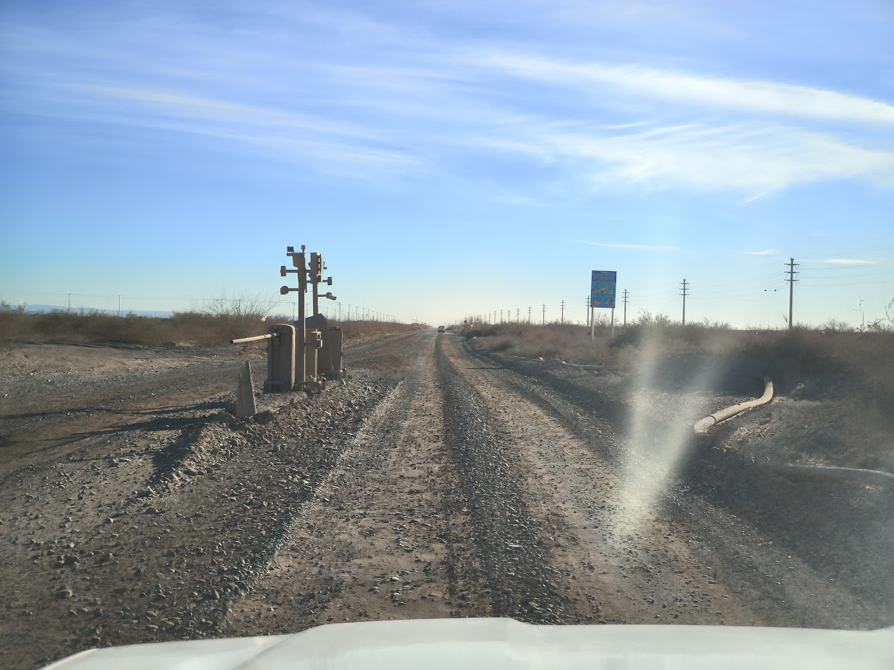
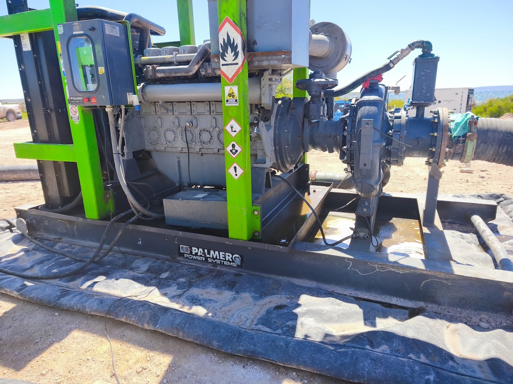
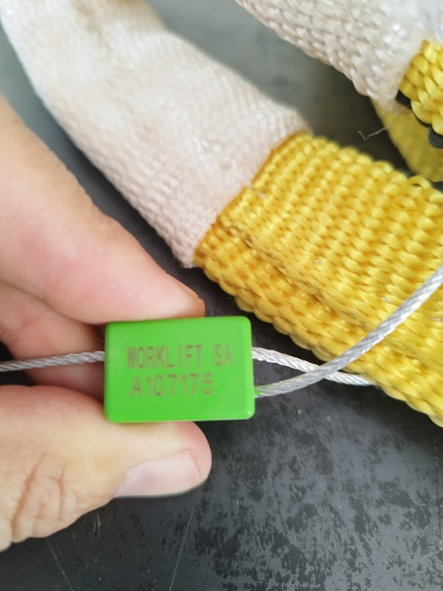
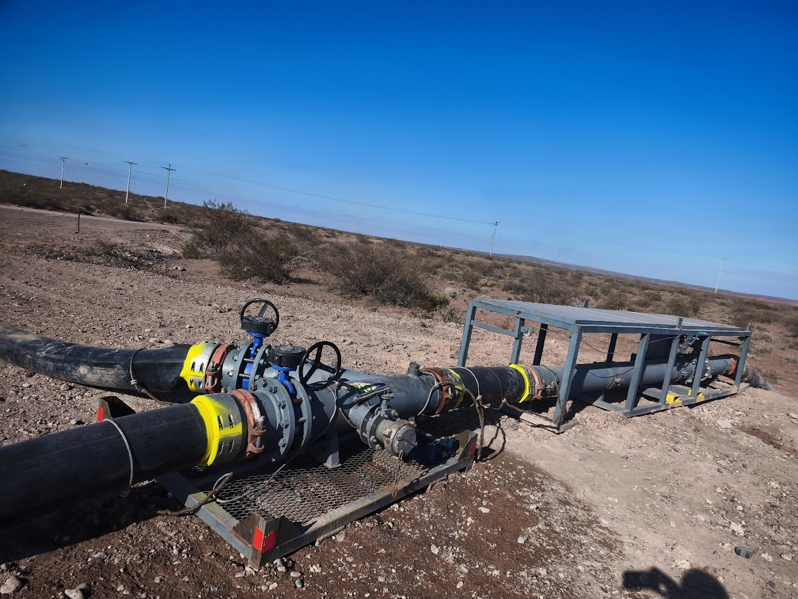

El Supervisor Operativo y su Función en Yacimiento
El supervisor de operaciones en Vaca Muerta es el eslabón fundamental entre la gerencia de operaciones de la compañía de servicios, la operadora petrolera (*company man*) y las cuadrillas que ejecutan tareas críticas en el pozo y la locación: Water Transfer, Well Testing, UAF, Flowback, Fractura, Cementación, Coiled Tubing, Torqueo, Snubbing, Wireline y Logística.
Lección 1 — Administración Operativa, Secreto Industrial y Ética
Marco regulatorio neuquino · Secreto industrial y confidencialidad en shale · Ética profesional del supervisor · Presencia e imagen en el pad · Pirámide de Bird · Sistema de Permisos de Trabajo Seguro (PTS) · Matriz de EPP multi-servicio.
1.1.1 Marco Legal y Autoridades de Aplicación en Neuquén
El supervisor operativo en la Cuenca Neuquina debe conocer con precisión las regulaciones que rigen su actividad. Un error u omisión documental no solo genera NPT (*Non-Productive Time*), sino que puede acarrear multas severas, clausura del yacimiento y responsabilidad civil o penal directa para el supervisor.
Marco Regulatorio y Autoridades de Aplicación · Cuenca Neuquina
CUMPLIMIENTO OBLIGATORIO| Ámbito | Norma / Resolución | Autoridad de Aplicación | Obligación para el Supervisor Operativo | Impacto del Incumplimiento |
|---|---|---|---|---|
| Nacional | Ley 17.319 & Ley 26.197 (Hidrocarburos) | Secretaría de Energía de la Nación | Asegurar la explotación racional de los recursos y evitar el derroche de gas o crudo. | Paralización de la concesión |
| Provincial | Ley 1875 & Res. 2263/15 (Ambiente) | Subsecretaría de Ambiente de Neuquén | Trazabilidad total de residuos especiales mediante manifiestos MERE y control de derrames. | Multas millonarias y clausura |
| Laboral / ART | Ley 24.557 & Res. SRT 905/15 | Superintendencia de Riesgos del Trabajo | Medición de ruido acústico (<85 dBA), exámenes periódicos y entrega firmada de EPP. | Desconocimiento de cobertura ART |
| Estándar Técnico | Normas API (RP 15WT, Spec 6A, RP 54, RP 53) | American Petroleum Institute | Inspección de bridas de cabezal de pozo, preventores BOP, llaves de torque y mangueras. | Falla catastrófica de barreras |
| Municipal | Ordenanzas de Añelo y Rincón de Sauces | Municipios de la Cuenca | Velocidad máxima en picadas (<40 km/h), control de polvo y estacionamiento en bases. | Retención de vehículos y multas |

Control de Acceso y Gestión de Ingresos a Locación
Puesto de control de guardia en el acceso al bloque no convencional. Es deber del supervisor asegurar que ningún integrante de la cuadrilla ni transportista ingrese sin inducción vigente y control de alcoholemia cero.
1.1.2 Secreto Industrial y Confidencialidad en la Operación No Convencional
En el desarrollo masivo de Vaca Muerta, la información operativa es altamente estratégica. Los datos de presiones de fractura por etapa, volúmenes de arena por pozo, concentración de reductores de fricción y resultados de ensayos de pozo (*Well Testing*) están protegidos por estrictos acuerdos de confidencialidad (*NDA*).
Matriz de Niveles de Información y Protocolo de Difusión
SEGURIDAD DE INFORMACIÓN| Nivel de Clasificación | Definición y Alcance | Ejemplos Críticos en Vaca Muerta | Canal Autorizado y Restricciones |
|---|---|---|---|
| Pública | Información abierta sin impacto comercial. | Leyes provinciales, manuales de fabricantes de bombas/grúas, partes del Servicio Meteorológico. | Libre difusión en carteleras y reuniones. |
| Interna | Datos operativos de la compañía de servicios. | Diagramas de turnos 14x14, inventario de herramientas de torqueo, listas de verificación de camiones. | Correos corporativos y red interna de la empresa. |
| Confidencial | Datos de producción y diseño del cliente. | Coordenadas GPS de nuevos pads, fechas de inicio de estimulación, caudal de crudo en Well Testing. | Solo jefatura de base y supervisor de turno |
| Secreto Industrial | Know-how de ingeniería de alta gama. | Fórmulas químicas de geles de fractura, curvas de declino de reservorio, registros sónicos de Wireline. | Estrictamente restringido bajo acuerdo NDA |
1.2 Sistema de Permisos de Trabajo Seguro (PTS / PTW)
El Permiso de Trabajo Seguro como instrumento legal y operativo · Roles: Solicitante, Emisor y Ejecutor · Los 6 tipos de permisos en yacimiento · Análisis de Trabajo Seguro (ATS/ART) · Charlas de seguridad de 5 minutos.
El **Permiso de Trabajo Seguro (PTS)** no es un trámite burocrático: es una licencia formal para operar donde se analizan los riesgos de la tarea y se declaran por escrito las barreras que protegen la vida de los trabajadores antes de encender un motor o aflojar una brida.
Tipos de Permisos de Trabajo Seguro (PTS) en Locaciones Petroleras
SISTEMA INTEGRAL DE CONTROL| Tipo de Permiso (PTS) | Color / Identificación | Actividades que lo Requieren | Requisitos Previos Obligatorios |
|---|---|---|---|
| PTS en Frío | Verde / Estándar | Mantenimiento mecánico sin calor, tendido de layflat, ajuste de conexiones roscadas, cambio de filtros. | ART firmado en locación, verificación de EPP básico, bloqueo mecánico si aplica. |
| PTS en Caliente | Rojo / Crítico | Soldadura eléctrica, oxicorte, amolado o uso de motores de combustión en áreas clasificadas (Zona 1 y 2). | Explosimetría continua (<10% LEL), línea de agua presurizada, extintor a menos de 5 m, vigía de fuego. |
| PTS Espacio Confinado | Amarillo / Alto Riesgo | Ingreso al interior de tanques australianos, piletas de flowback, separadores trifásicos o tolvas. | Aislamiento LOTO positivo, medición de O₂ (19.5-23.5%), vigía en boca de hombre, arnés y trípode de rescate. |
| PTS Trabajo en Altura | Azul / Altura | Tareas a más de 1,80 metros: inyector de Coiled Tubing, canasta de snubbing, mástiles de perforación/pulling. | Línea de vida certificada, arnés de cuerpo completo con doble cola de amarre, barandas perimetrales. |
| PTS Alta Presión | Naranja / Hidráulico | Pruebas hidráulicas a >1.000 psi en líneas de fractura, cementación, árboles de navidad o manifold de choke. | Delimitación con cinta de peligro ("Zona Roja"), silbato de alerta, cero personas en radio de eyección. |
| PTS Izaje Crítico | Violeta / Maniobra | Izaje con grúa de más del 75% de capacidad, uso de dos grúas en tándem o izaje sobre líneas vivas. | Plan de izaje firmado por rigger certificado, tabla de carga, cálculo de radio y velocidad de viento <45 km/h. |
| PTS Excavación y Zanjeo | Marrón / Obras Civiles | Movimiento de suelos en PADs, zanjeo de ductos/flowlines, plateas y excavaciones mecánicas >30 cm. | Plano de interferencias validado, cateo manual exploratorio con pala aislada, entibado de zanjas >1.20 m, detector trazador. |

Inspección Preoperacional de Bombas
Verificación de guardas de protección en partes móviles y ausencia de fugas de combustible antes de emitir el PTS de bombeo.

Elementos de Izaje Certificados
Toda faja o eslinga empleada en izajes de equipos debe tener etiqueta con límite de carga (WLL) legible y fecha de inspección periódica al día.
Matriz de EPP Específico por Servicio Petrolero en Vaca Muerta
PROTECCIÓN PERSONAL| Servicio de Campo | EPP Básico Permanente | EPP Específico Obligatorio | Riesgo Mayor que Mitiga |
|---|---|---|---|
| Fractura Hidráulica (Frac) | Mameluco ignífugo (FR), casco con barbiquejo, calzado de seguridad dieléctrico. | Doble protección auditiva (tapón + copa) para >95 dBA, guantes anti-impacto nivel 5. | Ruido de 18 bombas de frac a 10.000 psi y proyección de fragmentos metálicos. |
| Well Testing & Flowback | Mameluco FR antiestático, calzado caña alta resistente a hidrocarburos. | Detector monogas H₂S calibrado, máscara semiextensible con filtros mixtos para gases ácidos. | Intoxicación letal por gas sulfhídrico y vapores de hidrocarburos volátiles. |
| Coiled Tubing & Snubbing | Mameluco ignífugo, antiparras cerradas, calzado con suela antideslizante. | Arnés integral de rescate con línea retráctil, guantes térmicos ante cañería caliente. | Caídas de altura desde canasta (15 m) y chorro de fluido a alta temperatura. |
| Cementación | Ropa de trabajo reflectiva, casco, gafas de seguridad de policarbonato. | Protección respiratoria con filtros para partículas P100, guantes de PVC caña larga. | Quemadura química por contacto con lechada cáustica y silicosis por cemento seco. |
| Torqueo de Bridas | Calzado con puntera de acero reforzada, casco con barboquejo. | Guantes rígidos anti-atrapamiento con protección de falanges, pantalla facial completa. | Pellizco y aplastamiento de dedos por mordazas hidráulicas de 10.000 ft-lb. |
| Wireline | Mameluco ignífugo con tratamiento antiestático normado. | Calzado con dispersión electrostática (ESD), guantes de precisión para conexionado. | Descargas electrostáticas accidentales durante el cebado de cañones explosivos. |
| Supervisión de Obra Civil | Chaleco refractario clase 3, calzado con protección metatarsal, casco con cubrenuca. | Protector auditivo contra maquinaria pesada (>85 dBA), máscara contra polvo P100. | Atropellamiento en áreas de movimiento de suelos, ráfagas de Zonda con polvo y voladuras. |
| Supervisión General & SIMOPS | Mameluco ignífugo NFPA 2112, chaleco identificatorio de Supervisor de Locación. | Detector multigas 4 gases (H₂S, LEL, CO, O₂) calibrado, radio VHF intrínsecamente segura. | Exposición a múltiples riesgos concurrentes sin delimitación en locaciones multi-pozo. |
Código de Señalización de Seguridad en Locación (Norma IRAM 10.005 / OSHA)
ADVERTENCIA VISUAL| Color de Seguridad | Forma Geométrica | Significado | Ejemplo Concreto en Locación de Vaca Muerta |
|---|---|---|---|
| Rojo | Círculo con diagonal / Cuadrado | Parada de emergencia, prohibición, material de extinción | Botoneras ESD de corte general en missile, prohibido fumar en antorcha flare. |
| Amarillo | Triángulo equilátero | Precaución, riesgo de tropiezo o peligro físico | Líneas de 10.000 psi presurizadas en superficie, radio de giro de grúa telescópica. |
| Azul | Círculo | Obligación, acción imperativa de mando | Uso obligatorio de detector de gas H₂S en testing, protección auditiva obligatoria en frac. |
| Verde | Cuadrado o rectángulo | Seguridad, primeros auxilios, vías de escape | Puntos de encuentro (Muster Point) en pad, duchas lavaojos de emergencia, botiquín DEA. |
Lección 2 — Comunicación Operativa y Productividad Laboral
Protocolo de radio VHF y colación obligatoria · Manejo de interferencias en locación · Eliminación de desperdicios (Lean Upstream) · Indicadores de productividad por etapa.
1.3.1 Protocolo de Colación por Radio (Read-Back)
En un pad con 15 compañías de servicio operando en paralelo (SIMOPS), la comunicación debe ser inequívoca. El protocolo de colación (*Read-Back*) exige que toda instrucción que implique una maniobra hidráulica, eléctrica o mecánica sea repetida en su totalidad por quien la recibe antes de su ejecución.
Supervisor Well Testing: "Operador Choke, cierre estrangulador de 32 a 24 sesentaicuatroavos lentamente."
Operador Choke: "Comprendido Supervisor, cerrando estrangulador de 32 a 24 sesentaicuatroavos lentamente."

Instrumentación y Registro Continuo de Caudal
Caudalímetro electromagnético en línea de alimentación. El control cruzado de las lecturas de telemetría y los registros manuales de campo permite detectar variaciones antes de que se afecte el proceso.
Lección 3 — Autoridad, Liderazgo y Stop Work Authority (SWA)
El liderazgo visible en campo · Matriz de prioridades (Urgente vs. Importante) · Stop Work Authority como deber innegociable · Gestión del clima de trabajo en turnos de 12 horas.
Test Evaluativo Interactivo · Nivel 1
Demostrá tus conocimientos sobre administración operativa, marco regulatorio neuquino, permisos PTS y seguridad. Hacé clic en la opción correcta para verificar de inmediato tu respuesta.
Evaluación de Competencias · Nivel 1 (5 Preguntas)
MÍNIMO APROBATORIO: 80% (4 de 5)* Respondé las 5 preguntas para habilitar tu puntaje.